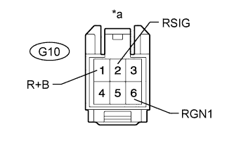

DTC B2779 Engine Starter Communication Malfunction |
| DTC Code | DTC Detection Condition | Trouble Area | DTC Output Confirmation Operation |
| B2779 | One of the following conditions is met (1 trip detection logic*):
|
| A remote start operation is performed. |
| Vehicle Condition when Malfunction Detected | Fail-safe Operation when Malfunction Detected |
| Engine does not start with remote start operation | Engine cannot be started by remote start operation only |
| DTC Code | Data List and Active Test |
| B2779 |
|
| 1.READ VALUE USING INTELLIGENT TESTER |
Turn the engine switch off.
Using the intelligent tester, read the Data List (Click here).
| Tester Display | Measurement Item/Range | Normal Condition | Diagnostic Note |
| Wireless C Code | Registration status between remote start ECU and certification ECU / No Regd or Regd | No Regd: ID not registered between remote start ECU and certification ECU Regd: ID registered between remote start ECU and certification ECU | Problems may be caused by the following:
|
| Result | Proceed to |
| "No Regd" appears on screen | A |
| "Regd" appears on screen | B |
|
| ||||
| A | |
| 2.REGISTER REMOTE START ID |
Register the remote start ID.
| NEXT | |
| 3.CHECK REMOTE START |
Check that the engine can be started using the remote start operation.
|
| ||||
| OK | ||
| ||
| 4.CHECK HARNESS AND CONNECTOR (MAIN BODY ECU - OPTION CONNECTOR) |
Disconnect the G47 ECU connector.
Disconnect the G10 option connector.
Measure the resistance according to the value(s) in the table below.
| Tester Connection | Condition | Specified Condition |
| G47-4 (BTX) - G10-4 (BTX) | Always | Below 1 Ω |
| G47-16 (BRX) - G10-5 (BRX) | ||
| G47-4 (BTX) or G10-4 (BTX) - Body ground | Always | 10 kΩ or higher |
| G47-16 (BRX) or G10-5 (BRX) - Body ground |
|
| ||||
| OK | |
| 5.CHECK HARNESS AND CONNECTOR (OPTION CONNECTOR - BATTERY AND BODY GROUND) |
|  |
Disconnect the G10 option connector.
Measure the voltage according to the value(s) in the table below.
| Tester Connection | Switch Condition | Specified Condition |
| G10-1 (R+B) - Body ground | Always | 11 to 14 V |
| G10-2 (RSIG) - Body ground | Engine switch off | Below 1 V |
| G10-2 (RSIG) - Body ground | Engine switch on (IG) | 11 to 14 V |
Measure the resistance according to the value(s) in the table below.
| Tester Connection | Condition | Specified Condition |
| G10-6 (RGN1) - Body ground | Always | Below 1 Ω |
| *a | Front view of option connector (to Remote Start ECU) |
|
| ||||
| OK | |
| 6.REPLACE REMOTE START |
Temporarily replace the remote start ECU with a new one.
Register the remote start ID.
Check that the engine can be started using the remote start operation.
|
| ||||
| OK | ||
| ||
| 7.REPLACE MAIN BODY ECU (MULTIPLEX NETWORK BODY ECU) |
Temporarily replace the main body ECU with a new or normally functioning one (Click here).
Check that the engine can be started using the remote start operation.
|
| ||||
| OK | ||
| ||